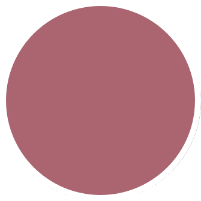

Solyana Tafesse is a UX/ UI Designer based in Northern Virginia

A little about me...
I graduated college with a Business Management degree where I developed valuable research and problem-solving skills. Applying these skills by effectively sourcing, evaluating, and utilizing information has allowed me to deliver unique ideas to solve complex design problems. Beyond delivering user-focused research, I strive to put myself in the position of the client. My experience also extends to information architecture, visual design and development.